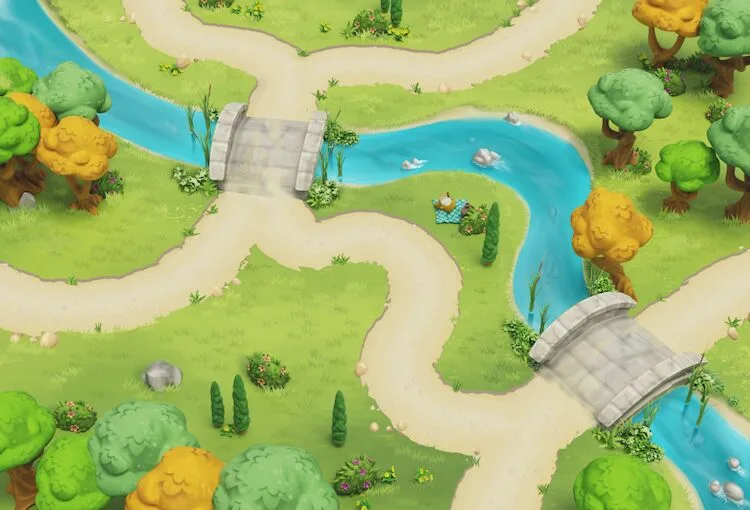
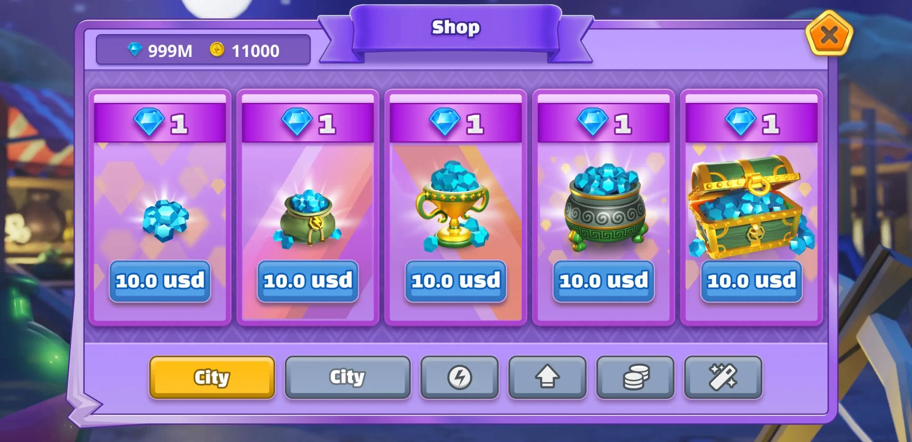
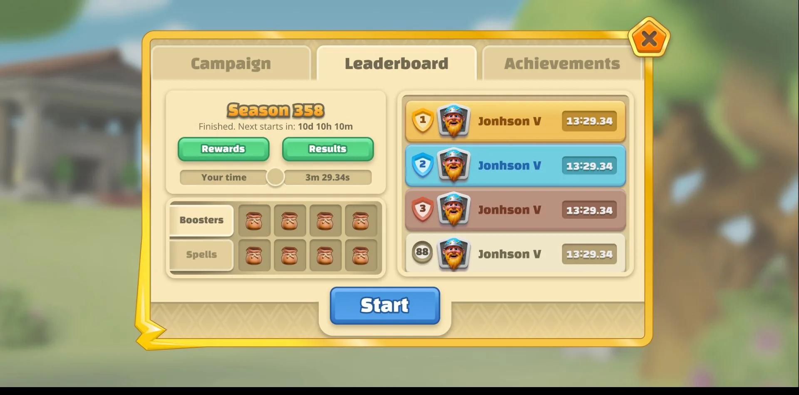
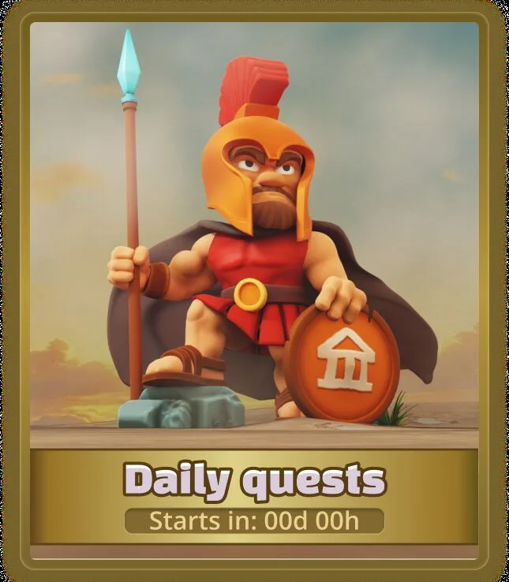
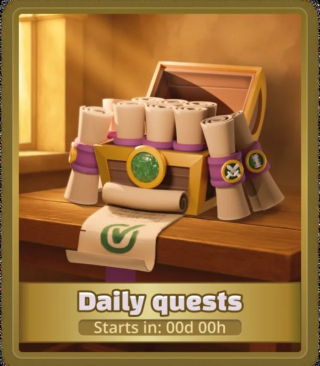
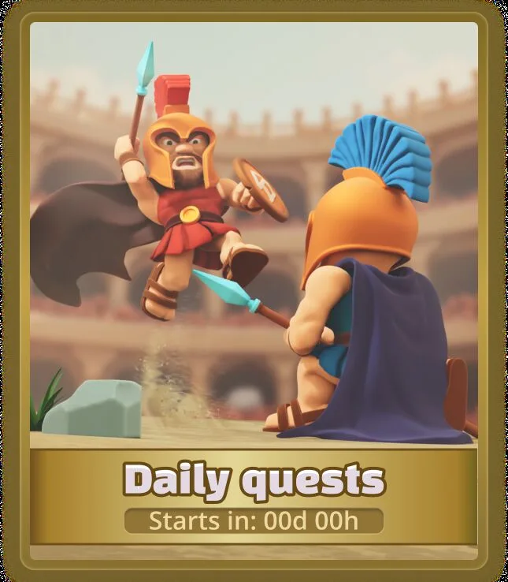

Kierunek artystyczny · Game art · UI · Motion
Kompletny świat wizualny zbudowany do walki
Mitologiczne tower defence rozwijane od pierwszego szkicu po finalne assety wdrożone w Unity.
Pełny obraz
Jeden język wizualny. Każdy element gry.
21Postaci
36Modeli wież
45Map
3Lata
01 / Postacie
Od sylwetki do osobowości
Każda postać przechodziła przez pełny pipeline: koncept, modelowanie, rigging, animację, rendering i compositing.

Titan
Boss character · Animation
Rider
Character · Mount · Motion02 / Wieże
Siła musi być widoczna
Dwanaście rodzin wież, każda rozwinięta przez trzy poziomy. Forma, skala i efekt komunikują progres wcześniej niż liczby.
 Level 1
Level 1 Level 2
Level 2 Level 3
Level 303 / Środowiska
Trzy światy. Dziesiątki ścieżek.
Każde środowisko otrzymało własną paletę, język terenu i zestaw modeli — 45 map bez utraty spójności.
 Świat 01 / Dolina
Świat 01 / Dolina Świat 02 / Wioska
Świat 02 / Wioska Świat 03 / Ruiny
Świat 03 / Ruiny04 / UI System
Czytelny, wyrazisty i lekki
Ramki, waluty, przyciski i nagrody powstały jako jeden skalowalny język szybkiej komunikacji.





System w Figmie · Eksporty produkcyjne · Stany przygotowane do Unity
05 / Pipeline produkcyjny
Jeden proces od pomysłu do silnika
01Szkic
02Modelowanie
03Rigging
04Animacja
05Compositing
06Unity
Gameplay
Wszystkie systemy w jednym rytmie
Postacie, wieże, środowiska, efekty i UI spotykają się w finalnym doświadczeniu gry.
Rezultat
Strategia jest ponadczasowa. To oprawa zmienia ją w legendę.
Trzy lata kierunku artystycznego, produkcji i iteracji stworzyły jeden spójny świat — od pierwszego szkicu po finalną bitwę.